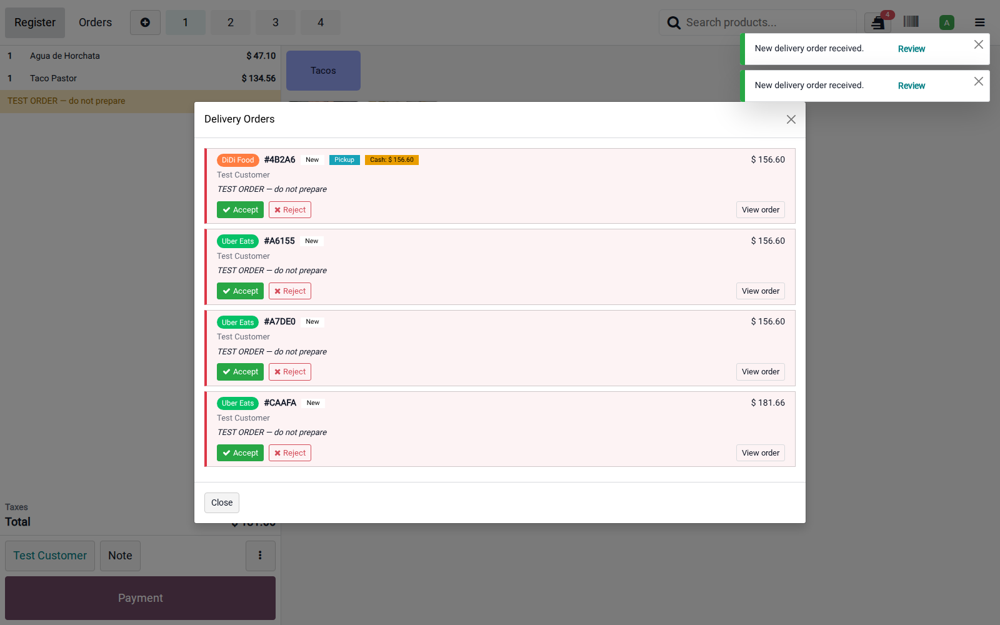
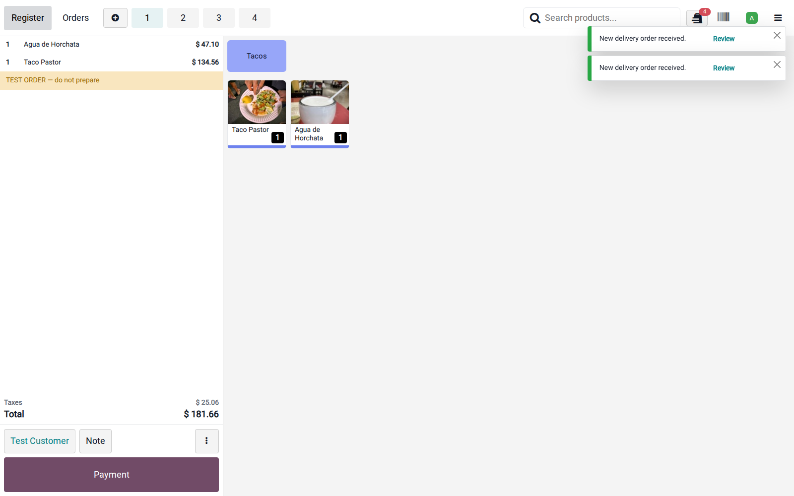
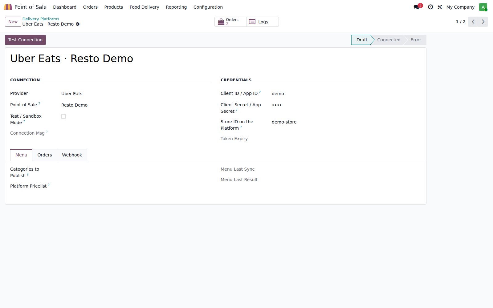
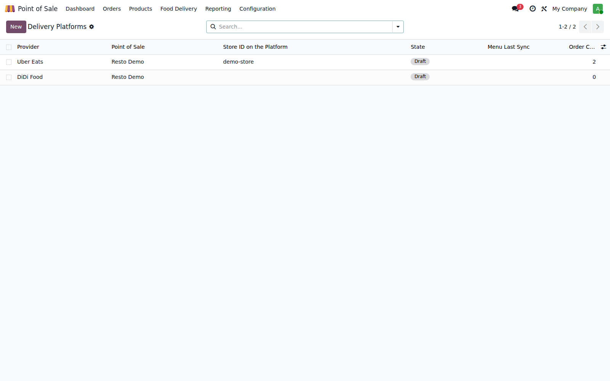

Conecta tu Punto de Venta Restaurante directo a las plataformas de delivery líderes en México.
Direct integration with the Uber Eats Marketplace API and the DiDi Food Open Platform — no aggregator, no monthly middleman fees.
Cada pedido suena en caja con alerta en loop, se acepta o rechaza con un clic y viaja a cocina como cualquier orden del POS.
Publica categorías, productos, fotos y modificadores (atributos) con un botón. Lista de precios propia por plataforma para compensar comisiones.
Diario y método de pago por plataforma, pago registrado automáticamente, soporte de pedidos en efectivo (México) y cierres de sesión sin descuadres.
| Integración directa oficial | Uber Eats Marketplace API (OAuth2, webhooks firmados HMAC-SHA256) y DiDi Food Open Platform (tokens por tienda, callbacks firmados MD5). Sin intermediarios tipo agregador. |
| Ciclo de vida completo | Nuevo → Aceptar (o auto-aceptar) → Listo → Repartidor en camino (nombre y teléfono en el POS) → Entregado. Cancelaciones en ambos sentidos, sin duplicados (webhooks idempotentes). |
| Agotados en segundos | Apaga un platillo por plataforma desde la ficha del producto o el control de agotados; se suspende al instante en Uber Eats / DiDi Food. |
| México primero | Precios con IVA incluido (16%), pedidos en efectivo (cobro en tienda o por repartidor), textos en español. |
| Modo demo | Simula un pedido completo sin credenciales para capacitar al personal antes de salir en vivo. |
| Seguridad y bitácora | URLs de webhook con secreto por cuenta + verificación de firma de cada plataforma; bitácora de 30 días de todo lo que entra y sale. |




XUBAX — Apps profesionales para Odoo
Soporte: cristofferson28@gmail.com · Licencia OPL-1 · Odoo 19